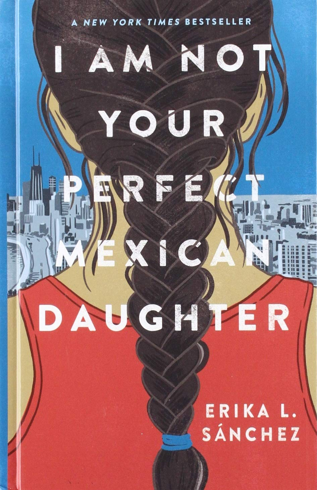
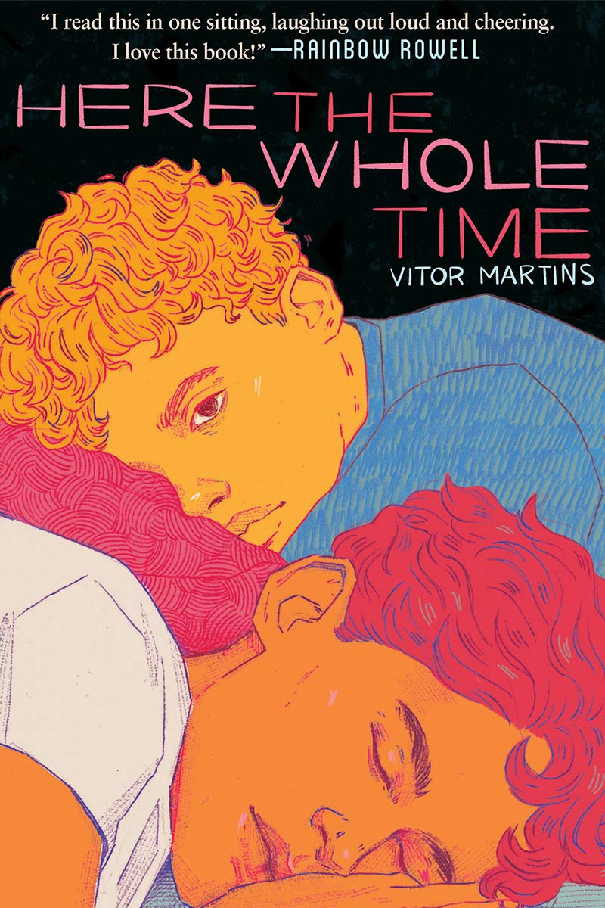
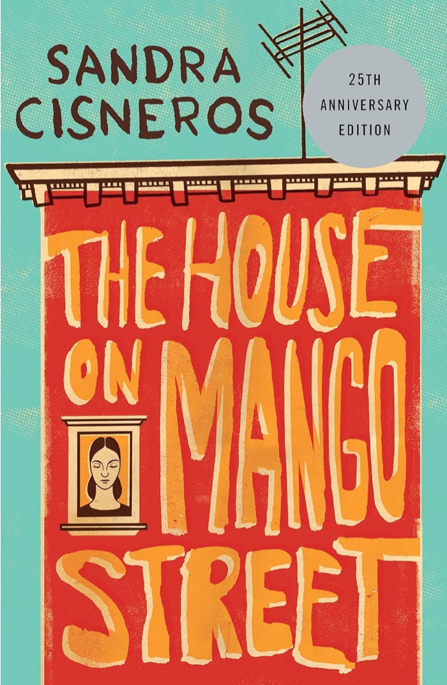
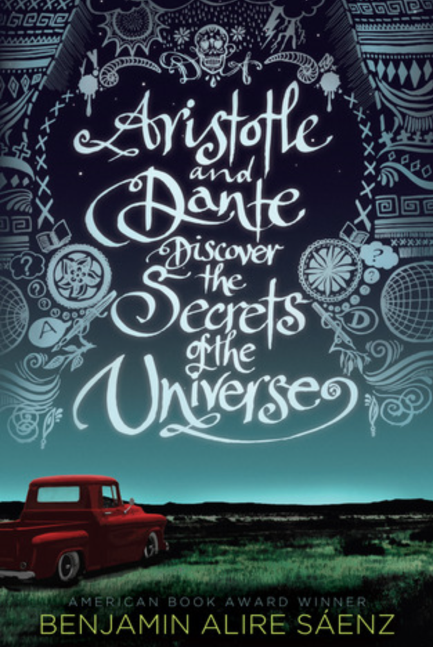

Julia was not the perfect daughter, that was Ulga's role. Then a tragic accident on the busiest street in Chicago leaves Olga dead and Julia left behind to reassemble the shattered pieces of her family. And no one seems to acknowledge that Julia is broken, too. Instead, her mother seems to channel her grief into pointing out every possible way Julia has failed. It’s not long before Julia discovers that Olga might not have been as perfect as everyone thought.

Felipe is a seventeen year old constantly battling with himself over his body image and weight. His mother announces that Caio, their quiet neighbor, will be staying with them for 15 days through winter break. This is troubling for Felipe considering he’s had a crush on Caio since they were kids. What was meant to be days of relaxation quickly turn into a journey of self discovery and overcoming insecurities. This book deals with the fatphobia in the Hispanic community.

Cisneros, born in Chicago in 1954 to Mexican parents, an only girl with 7 brothers, experienced a transient early childhood as the family moved back and forth from Chicago to Mexico. But when she was 11 they settled down and bought a house in the Humboldt Park area of Chicago, predominantly Puerto Rican, and it was from her life experiences there she drew the ideas for her stories in The House on Mango Street. She experienced the inequalities that were connected to her culture, her gender, and her poor working class family.

Aristotle is an angry teen with a brother in prison. Dante is a know-it-all who has an unusual way of looking at the world. When the two meet at the swimming pool, they seem to have nothing in common. But as the loners start spending time together, they discover that they share a special friendship--the kind that changes lives and lasts a lifetime. And it is through this friendship that Ari and Dante will learn the most important truths about themselves and the kind of people they want to be.